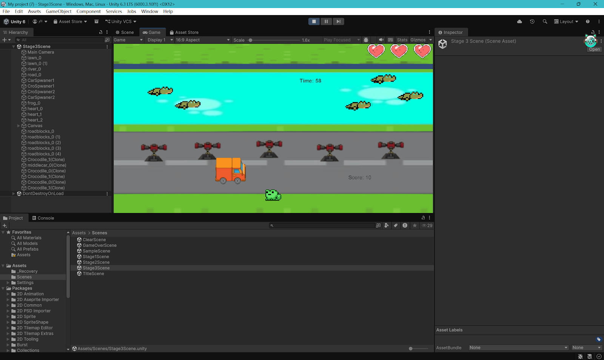
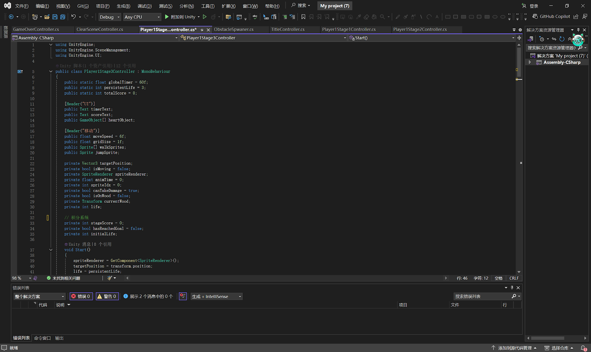

Frog Adventure
A high-stakes 2D platformer built with Unity and C# featuring a heroic frog navigating perilous paths.
Status
PRODUCTION_READY



Core Engine
Creative Suite
-
01
Responsive Movement
Precision-tuned character controller for frame-perfect jumping and air control, ensuring gameplay feels tactile and fluid.
-
02
Dynamic Obstacle Spawning
Object pooling system for efficient, procedurally generated hazards that scale in difficulty as the player progresses.
-
03
Advanced Life System
Sophisticated health management with invincibility frames and visual feedback loops integrated with Unity's Event system.
Technical Hurdle: Physics Jitter
Implementing 2D physics that felt responsive without being 'floaty' proved difficult. Unity's standard Rigidbody2D often caused micro-stuttering on high refresh-rate monitors during horizontal movement.
Architectural Solution
Developed a custom Raycast-based controller that bypasses the physics engine for movement calculation while still utilizing triggers for collision detection. This provided absolute control over acceleration curves and slope handling.